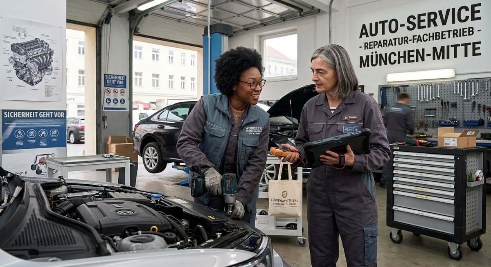

Teil 2 · Bild und Erfahrung
Karte 023
Arbeit in einer Werkstatt oder Firma
Ausführliches Übungsmaterial zur Vorder- und Rückseite der Karte.

Ihre Aufgabe
- den Ort und die Personen
- was dort gearbeitet wird
- welche Aufgaben man dort haben könnte
- was an Arbeit wichtig ist
- welche Erfahrungen Sie selbst haben
Interaktives Sprechtraining
Mit ChatGPT sprechen üben
Öffne ChatGPT, starte dort zuerst den Sprachmodus (Voice Mode) und füge anschließend den kopierten Übungsprompt in diesen Chat ein.
- Tippe auf den Button. Der Übungsprompt wird kopiert und ChatGPT wird geöffnet. Melde dich bei Bedarf in deinem ChatGPT-Konto an.
- Starte in ChatGPT zuerst den Sprachmodus (Voice Mode).
- Füge den bereits kopierten Prompt in den Chat des Sprachmodus (Voice Mode) ein und sende ihn ab.
- Beginne anschließend die Sprechübung.
- Wenn du die Übung beenden und Feedback bekommen möchtest, sage:
Die Übung ist beendet. Bitte gib mir jetzt Feedback.
Prompt anzeigen oder manuell kopieren
ChatGPT ist ein externer Dienst. Für den Sprachmodus (Voice Mode) musst du dich möglicherweise bei deinem ChatGPT-Konto anmelden und den Zugriff auf das Mikrofon erlauben. Verfügbare Funktionen hängen von deinem Gerät und Konto ab. Die Übung ersetzt keine offizielle Prüfungsbewertung.
Nützliche Satzanfänge
- Ich vermute, dass das ein … ist.
- Die Personen arbeiten gerade an …
- Dabei muss man wahrscheinlich …
- Im Beruf ist wichtig, dass …
- Ich selbst habe erlebt, dass …
Modellantwort anhören
Höre zuerst aufmerksam zu. Sprich danach nicht einfach alles nach, sondern bearbeite die Aufgabe mit eigenen Informationen.
Modellantwort
Ich vermute, dass das Bild eine Werkstatt oder eine kleine Firma zeigt. Man sieht wahrscheinlich zwei Personen in Arbeitskleidung, vielleicht mit Werkzeugen oder an einem Tisch. Sie arbeiten konzentriert zusammen. Vielleicht reparieren sie etwas oder bereiten Material für den nächsten Schritt vor. Die Stimmung wirkt ruhig, aber auch professionell, denn jeder scheint zu wissen, was er tun muss.
An einem Arbeitsplatz sind mehrere Dinge wichtig: Pünktlichkeit, Sicherheit, gute Kommunikation und natürlich Zusammenarbeit. Wenn man im Team arbeitet, muss man fragen können und aufmerksam sein. Ich selbst habe in einem Praktikum gemerkt, dass Sprache am Arbeitsplatz sehr wichtig ist, auch wenn die Aufgaben eher praktisch sind. Man muss Anweisungen verstehen und manchmal schnell reagieren. Deshalb finde ich solche Arbeitsorte interessant. Sie zeigen, dass man nicht nur Fachwissen braucht, sondern auch Zuverlässigkeit und gegenseitigen Respekt.
Mögliche Prüferfragen und Antwortideen
-
Arbeiten Sie lieber praktisch oder am Computer?
Antwortidee: Ich arbeite lieber praktisch, aber ein bisschen Computer gehört heute auch dazu.
-
Was ist in einem Team besonders wichtig?
Antwortidee: Respekt, klare Kommunikation und Zuverlässigkeit sind besonders wichtig.
-
Haben Sie schon ein Praktikum gemacht?
Antwortidee: Ja, ich habe schon ein Praktikum gemacht und viel gelernt.
-
Warum ist Sprache am Arbeitsplatz wichtig?
Antwortidee: Weil man Anweisungen verstehen und Probleme schnell klären muss.
Wortschatz
| Deutsch | Englisch |
|---|---|
| die Werkstatt | workshop |
| die Arbeitskleidung | work clothes |
| das Werkzeug | tool |
| konzentriert | focused |
| die Anweisung | instruction |
| zuverlässig | reliable |
| der Respekt | respect |
| das Fachwissen | specialist knowledge |
Schnelltraining
Beschreiben Sie zuerst nur den Arbeitsplatz. Danach fügen Sie einen Satz über Ihre eigene Berufserfahrung hinzu.